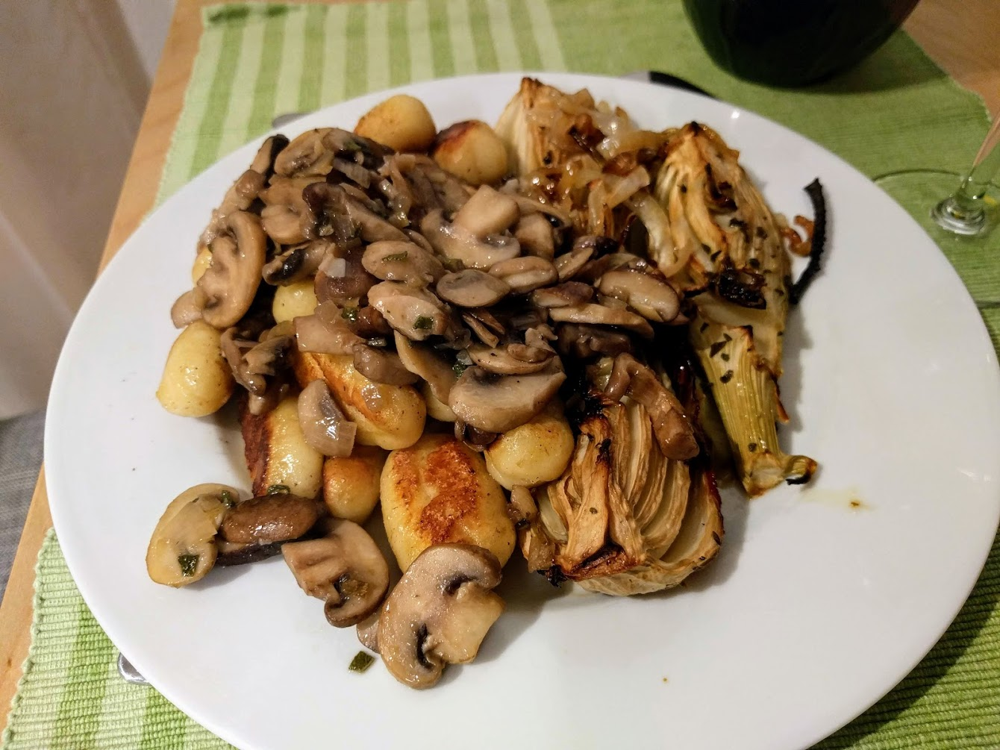

Gnocchis
Pour 3 personnes :

Ici avec une sauce à la
sauge et aux champignons et des fenouils rôtis.
- 500g de patates
- Pas mal de farine, environ 250g, mais mieux vaut prévoir plus
- Un jaune d'œuf
- Une noisette de beurre
- Sel, poivre, muscade
- Éplucher et couper les pommes de terre en dés. Les faire cuire dans l'eau bouillante, jusqu'à ce que ça soit facile de les écraser.
- Les égoutter et les écraser en purée. Idéalement, avec un moulin à légumes ;
si on en a pas, avec un presse-purée et de l'huile de coude. Saler, poivrer, muscader.
- Laisser refroidir quelques minutes, puis ajouter le jaune d'œuf et pas mal de farine. Mélanger avec les doigts pour former une boule homogène, et rajouter de la farine jusqu'à ce que la boule ne soit plus collante : on doit pouvoir la déchirer sans qu'il y ait plein de pâte qui reste sur les doigts.
- Déchirer la boule en gros morceaux, rouler chaque morceau pour former des saucisses. Couper chaque saucisse en tranches d'un ou deux centimères, former une petite boule avec chaque morceau et leur donner une forme de gnocchi avec une fouchette.
- Faire bouillir une quantité généreuse d'eau, y plonger les gnocchis, et les récupérer avec une écumoire lorsqu'ils remontent à la surface (ça prend environ 2 minutes).
- Les faire revenir dans une poêle avec du beurre. Déguster
immédiatement, par exemple avec du pesto ou de la sauce aux champignons.
Retour à la liste des recettes